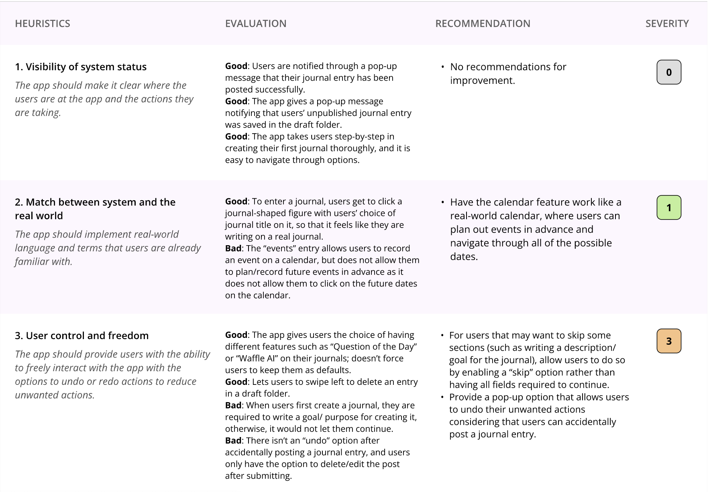

Competitor Analysis: Heuristic Evaluation
This is a longer card with supporting text below as a natural lead-in to additional content. This content is a little bit longer.
Read more
User Research
This card has supporting text below as a natural lead-in to additional content.
Read more
UX Storytelling
This is a wider card with supporting text below as a natural lead-in to additional content. This card has even longer content than the first to show that equal height action.
Read more